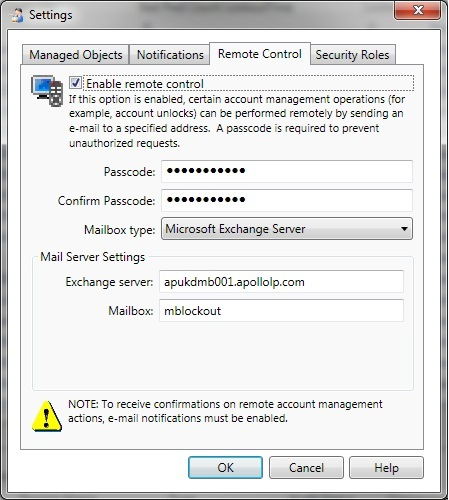

Account Lockout Examiner(ALE) does not work through remote control with Exchange server.
Remote control is configured to use Exchange. Notifications are sent without issues, but
replying to them does not unlock accounts.
This usually happens when Remote Control is configured incorrectly.
This usually happens when Remote Control is configured incorrectly.
Please make sure that:
- The Account Lockout Examiner service account is the owner of the mailbox, specified for Remote control.
- Name of a mail server ('Server' field) is entered as Fully qualified domain name (FQDN), and name of a user ('Mailbox' field) is entered as samAccountName of the service account

- The server with the Mailbox role is specified for remote control ('Server' field)
- Your mail server is able to process web-requests. To check it, try to access the server by the URL https://%ServerName%/EWS/Exchange.asmx, you should see an xml file.
- The mailbox specified for remote control is not specified as a recipient in notification list.
- You reply to notifications in plain text format.